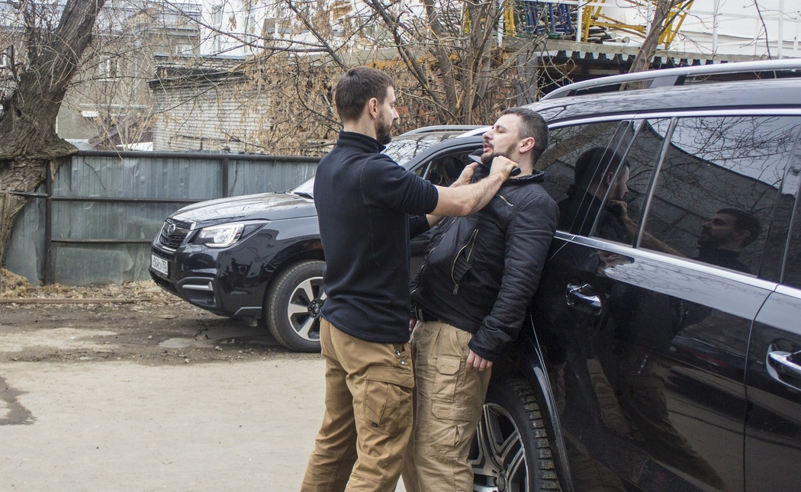
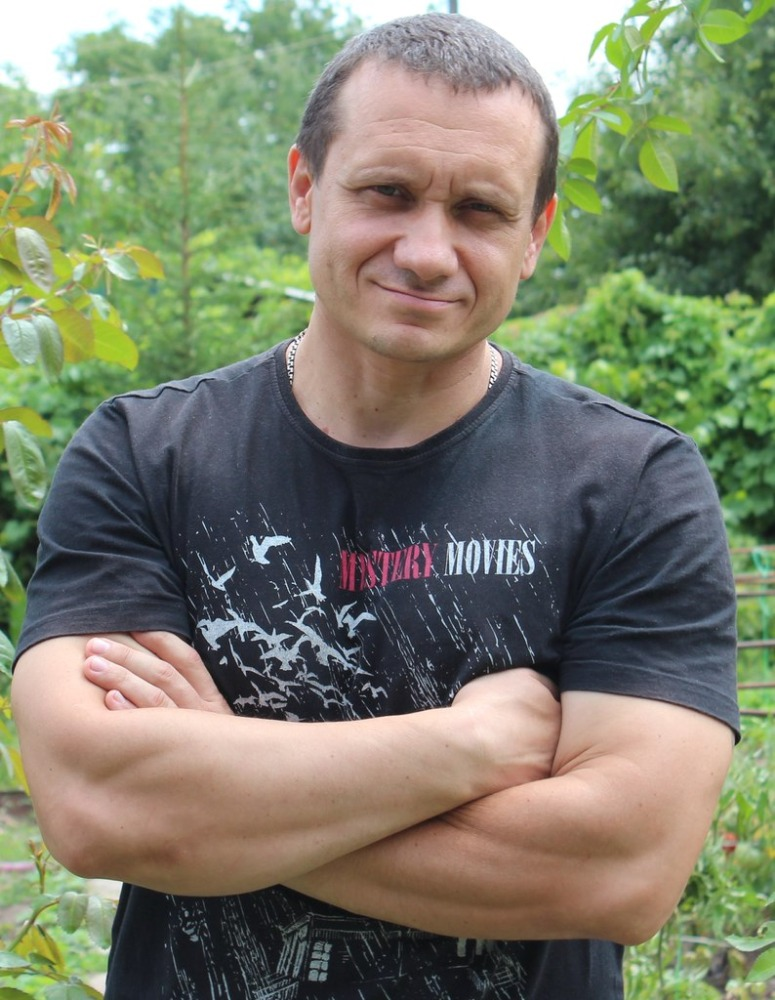
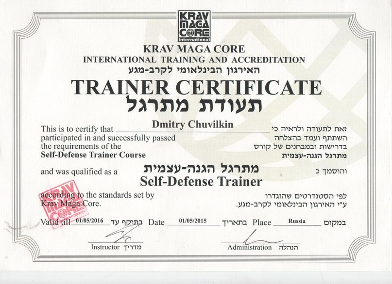
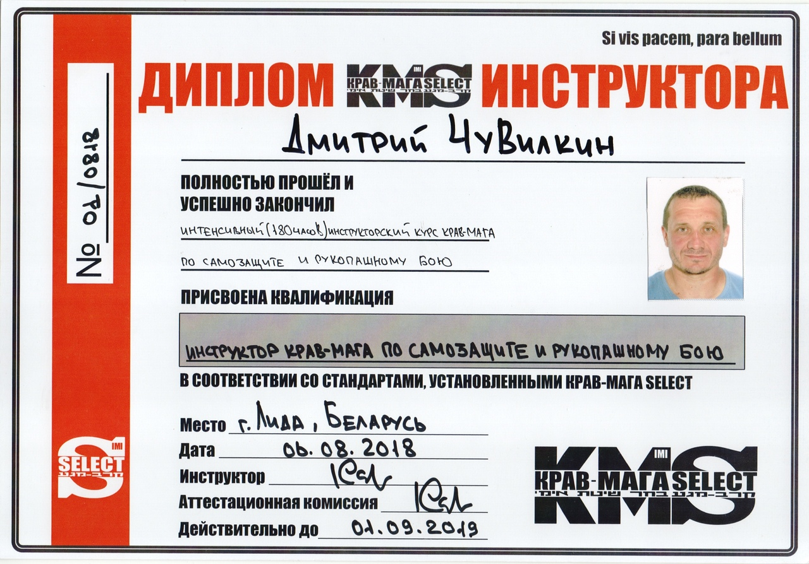
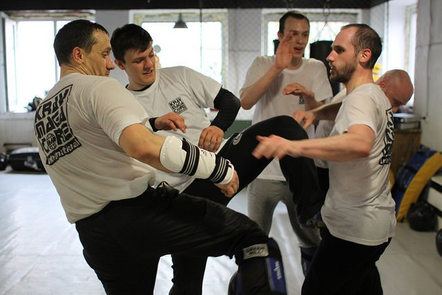
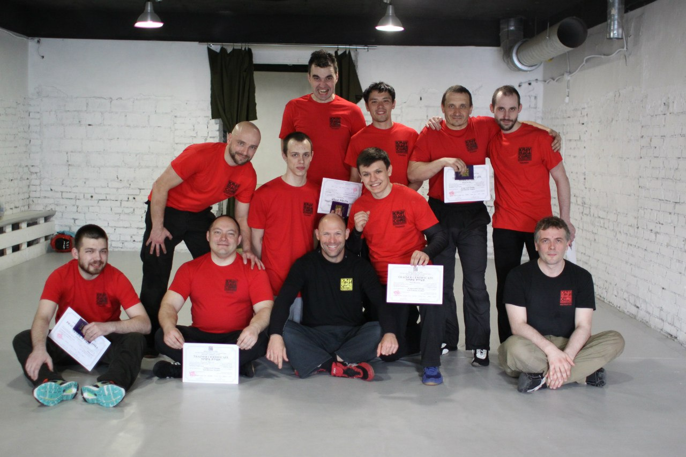
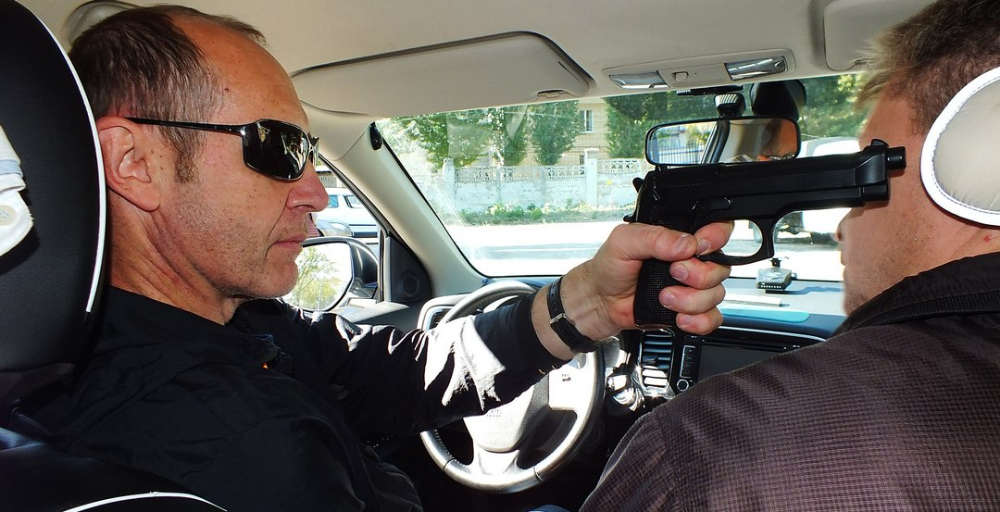
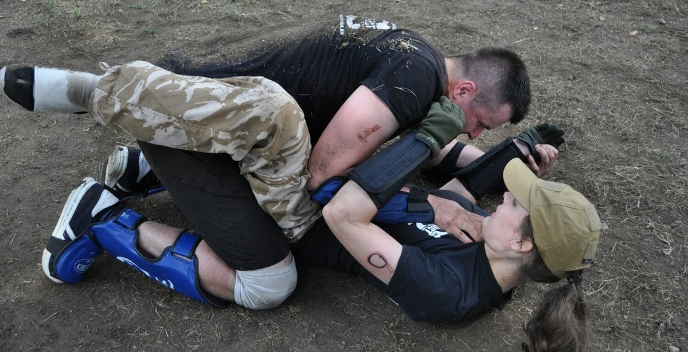

Адрес: г. Саратов, ул. Большая Садовая, д. 158, спорт-клуб "Эверест"
Тел.: 57-28-81
КРАВ-МАГА
в Саратове
в Саратове
КРАВ-МАГА
Это разработанная в Израиле система самообороны и рукопашного боя, делающая акцент на быстрой
нейтрализации угрозы жизни. Все приёмы концентрируются на максимальной эффективности в условиях
реальной схватки. В то же время, при обучении показывается, как смягчить приёмы адекватно ситуации и
подчёркивается необходимость соблюдения пределов необходимой самообороны.


Чувилкин Дмитрий Юрьевич - Более 20 лет осуществлял подготовку
сотрудников органов внутренних дел и военнослужащих внутренних войск.
Доцент, кандидат социологических наук. Автор 5 учебных пособий и более 30 работ по вопросам совершенствования физической подготовки в органах внутренних дел. В 2005 году учебное пособие «Комбинированное использование боевых приемов борьбы и огнестрельного оружия при задержании сопротивляющихся правонарушителей» удостоено почетной грамоты Министра внутренних дел «За лучшую научно-исследовательскую работу по проблемам совершенствования работы с кадрами МВД».
Тренер крав-мага, в 2015 году прошел курс обучения под руководством А. Дарса (руководитель «Krav Maga Core»); в 2016 курсы повышения квалификации под руководством Х.Сассон(руководитель I.K.M(International Krav-Maga), в 2017 году курс «Бой в ограниченном пространстве» под руководством А. Марчак (Expert-4), регулярно проходит семинары, курсы, тренинги под руководством экспертов крав-мага: Т.Гилад, А Карасев.


Доцент, кандидат социологических наук. Автор 5 учебных пособий и более 30 работ по вопросам совершенствования физической подготовки в органах внутренних дел. В 2005 году учебное пособие «Комбинированное использование боевых приемов борьбы и огнестрельного оружия при задержании сопротивляющихся правонарушителей» удостоено почетной грамоты Министра внутренних дел «За лучшую научно-исследовательскую работу по проблемам совершенствования работы с кадрами МВД».
Тренер крав-мага, в 2015 году прошел курс обучения под руководством А. Дарса (руководитель «Krav Maga Core»); в 2016 курсы повышения квалификации под руководством Х.Сассон(руководитель I.K.M(International Krav-Maga), в 2017 году курс «Бой в ограниченном пространстве» под руководством А. Марчак (Expert-4), регулярно проходит семинары, курсы, тренинги под руководством экспертов крав-мага: Т.Гилад, А Карасев.
Основная цель крав-мага для мужчин - умение защитить себя и близких от нападения одного или нескольких
правонарушителей.
Крав-мага для женщин - это действия при попытках ограбления, либо нападения с иными целями. Тренировки позволяют держать себя в отличной физической форме, повышают стрессоустойчивость, уверенность в себе.
Крав-мага для детей позволяет улучшить физическую подготовленность, приобрести уверенность в себе, научиться вести себя в неприятных ситуациях со своими сверстниками, более старшими детьми и взрослыми.
Так же есть подготовка для охранников, и сотрудников силовых структур.
Крав-мага для женщин - это действия при попытках ограбления, либо нападения с иными целями. Тренировки позволяют держать себя в отличной физической форме, повышают стрессоустойчивость, уверенность в себе.
Крав-мага для детей позволяет улучшить физическую подготовленность, приобрести уверенность в себе, научиться вести себя в неприятных ситуациях со своими сверстниками, более старшими детьми и взрослыми.
Так же есть подготовка для охранников, и сотрудников силовых структур.
В Саратове только у нас:
Базовые тренировки

Международные семинары

Тематический семинар "Самооборона при угрозе оружием"

Тематический семинар "Женская самооборона"

Тематический семинар "Самооборона в автомобиле"

Занятия вне зала

Как нас найти:
Адрес: г. Саратов, ул. Большая Садовая, д. 158, спорт-клуб "Эверест"
тел.: 57-28-81
!!! Интерактивное обновление новостей ЗДЕСЬ !!!
тел.: 57-28-81
!!! Интерактивное обновление новостей ЗДЕСЬ !!!